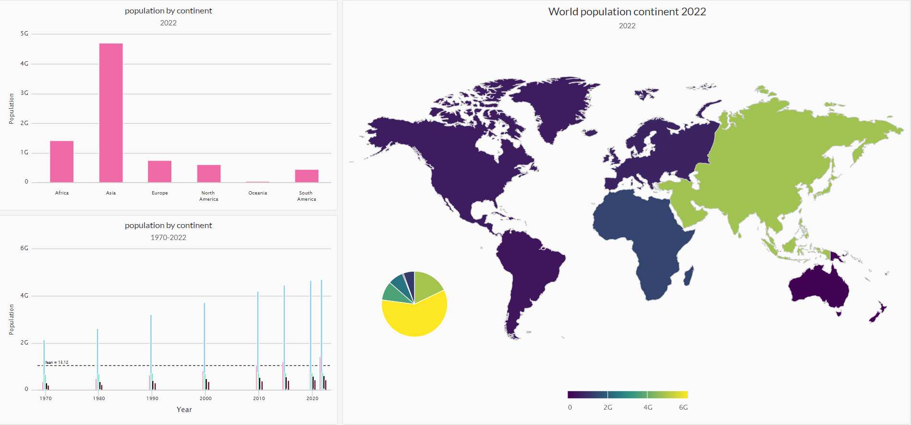
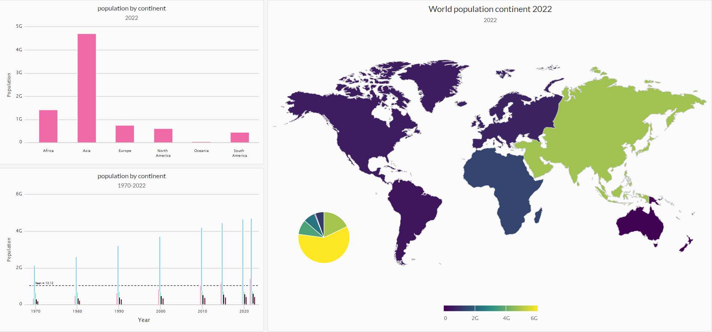

Fraud is prevalent these days, whether you are a small taco shop or a large international business. While there are emerging technologies that employ machine learning and artificial intelligence to detect fraud, many instances of fraud detection still require strong data analytics to find abnormal charges.
In this project, I have applied SQL skills to analyze historical credit card transactions and consumption patterns in order to identify possible fraudulent transactions.
 

Interactive dashbaord created with RMarkdown. I have used R and some other Visualization Libraries to analyze the world population data based on worldwide, continent and country.

An analysis notebook that analyzes and visualizes the major metrics of the portfolios to determine which portfolio is performing the best across multiple areas: volatility, returns, risk, and Sharpe ratios, and also determine which portfolio outperformed the others.

Some of my Tableaue Visualization Personal Projects on my Tableaue Public Account

build and evaluate several machine learning models to predict credit risk using data we'd typically see from peer-to-peer lending services. Credit risk is an inherently imbalanced classification problem (the number of good loans is much larger than the number of at-risk loans), so we will need to employ different techniques for training and evaluating models with imbalanced classes. we will use the imbalanced-learn and Scikit-learn libraries to build and evaluate models using the two following techniques:
Resampling
Ensemble Learning

In this project, I put Unsupervised-learning and Amazon SageMaker skills into action by clustering cryptocurrencies and creating plots to present my results by generating a report of what cryptocurrencies are available on the trading market and how they can be grouped using classification.

In this project we will test the many time series tools in order to predict future movements in the value of Bitcoin versus the USA dollar and also
we will build a Scikit-Learn linear regression model to predict BTC/USD returns with lagged BTC/USD futures returns and categorical calendar seasonal effects.

In this project, I have applied natural language processing to understand the sentiment in the latest news articles featuring Bitcoin and Ethereum. I will also apply fundamental NLP techniques to better understand the other factors involved with the coin prices such as common words and phrases and organizations and entities mentioned in the articles.

In this project I have used deep learning recurrent neural networks to model bitcoin closing prices. One model will use the FNG indicators to predict the closing price while the second model uses a window of closing prices to predict the nth closing price.

I have combined new algorithmic trading skills in financial Python programming and machine learning to create an algorithmic trading bot that learns and adapts to new data and evolving markets.
In a Jupyter notebook:
Implement an algorithmic trading strategy that uses machine learning to automate the trade decisions.
Adjust the input parameters to optimize the trading algorithm.
Train a new machine learning model and compare its performance to that of a baseline model.